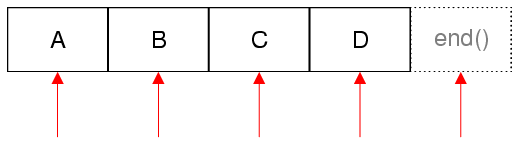

Container Classes
Introduction
The Qt library provides a set of general purpose template-based container classes. These classes can be used to store items of a specified type. For example, if you need a resizable array of QStrings, use QList<QString>.
These container classes are designed to be lighter, safer, and easier to use than the STL containers. If you are unfamiliar with the STL, or prefer to do things the "Qt way", you can use these classes instead of the STL classes.
The container classes are implicitly shared, they are reentrant, and they are optimized for speed, low memory consumption, and minimal inline code expansion, resulting in smaller executables. In addition, they are thread-safe in situations where they are used as read-only containers by all threads used to access them.
The containers provide iterators for traversal. STL-style iterators are the most efficient ones and can be used together with Qt's and STL's generic algorithms. Java-style Iterators are provided for backwards compatibility.
Note: Since Qt 5.14, range constructors are available for most of the container classes. QMultiMap is a notable exception. Their use is encouraged in place of the various from/to methods. For example:
QList<int> list { 1, 2, 3, 4, 4, 5 }; QSet<int> set(list.begin(), list.end()); /* Will generate a QSet containing 1, 2, 3, 4, 5. */
The Container Classes
Qt provides the following sequential containers: QList, QStack, and QQueue. For most applications, QList is the best type to use. It provides very fast appends. If you really need a linked-list, use std::list. QStack and QQueue are convenience classes that provide LIFO and FIFO semantics.
Qt also provides these associative containers: QMap, QMultiMap, QHash, QMultiHash, and QSet. The "Multi" containers conveniently support multiple values associated with a single key. The "Hash" containers provide faster lookup by using a hash function instead of a binary search on a sorted set.
As special cases, the QCache and QContiguousCache classes provide efficient hash-lookup of objects in a limited cache storage.
| Class | Summary |
|---|---|
| QList<T> | This is by far the most commonly used container class. It stores a list of values of a given type (T) that can be accessed by index. Internally, it stores an array of values of a given type at adjacent positions in memory. Inserting at the front or in the middle of a list can be quite slow, because it can lead to large numbers of items having to be moved by one position in memory. |
| QVarLengthArray<T, Prealloc> | This provides a low-level variable-length array. It can be used instead of QList in places where speed is particularly important. |
| QStack<T> | This is a convenience subclass of QList that provides "last in, first out" (LIFO) semantics. It adds the following functions to those already present in QList: push(), pop(), and top(). |
| QQueue<T> | This is a convenience subclass of QList that provides "first in, first out" (FIFO) semantics. It adds the following functions to those already present in QList: enqueue(), dequeue(), and head(). |
| QSet<T> | This provides a single-valued mathematical set with fast lookups. |
| QMap<Key, T> | This provides a dictionary (associative array) that maps keys of type Key to values of type T. Normally each key is associated with a single value. QMap stores its data in Key order; if order doesn't matter QHash is a faster alternative. |
| QMultiMap<Key, T> | This is a convenience subclass of QMap that provides a nice interface for multi-valued maps, i.e. maps where one key can be associated with multiple values. |
| QHash<Key, T> | This has almost the same API as QMap, but provides significantly faster lookups. QHash stores its data in an arbitrary order. |
| QMultiHash<Key, T> | This is a convenience subclass of QHash that provides a nice interface for multi-valued hashes. |
Containers can be nested. For example, it is perfectly possible to use a QMap<QString, QList<int>>, where the key type is QString and the value type QList<int>.
The containers are defined in individual header files with the same name as the container (e.g., <QList>). For convenience, the containers are forward declared in <QtContainerFwd>.
The values stored in the various containers can be of any assignable data type. To qualify, a type must provide a copy constructor, and an assignment operator. For some operations a default constructor is also required. This covers most data types you are likely to want to store in a container, including basic types such as int and double, pointer types, and Qt data types such as QString, QDate, and QTime, but it doesn't cover QObject or any QObject subclass (QWidget, QDialog, QTimer, etc.). If you attempt to instantiate a QList<QWidget>, the compiler will complain that QWidget's copy constructor and assignment operators are disabled. If you want to store these kinds of objects in a container, store them as pointers, for example as QList<QWidget *>.
Here's an example custom data type that meets the requirement of an assignable data type:
class Employee { public: Employee() {} Employee(const Employee &other); Employee &operator=(const Employee &other); private: QString myName; QDate myDateOfBirth; };
If we don't provide a copy constructor or an assignment operator, C++ provides a default implementation that performs a member-by-member copy. In the example above, that would have been sufficient. Also, if you don't provide any constructors, C++ provides a default constructor that initializes its member using default constructors. Although it doesn't provide any explicit constructors or assignment operator, the following data type can be stored in a container:
struct Movie { int id; QString title; QDate releaseDate; };
Some containers have additional requirements for the data types they can store. For example, the Key type of a QMap<Key, T> must provide operator<(). Such special requirements are documented in a class's detailed description. In some cases, specific functions have special requirements; these are described on a per-function basis. The compiler will always emit an error if a requirement isn't met.
Qt's containers provide operator<<() and operator>>() so that they can easily be read and written using a QDataStream. This means that the data types stored in the container must also support operator<<() and operator>>(). Providing such support is straightforward; here's how we could do it for the Movie struct above:
QDataStream &operator<<(QDataStream &out, const Movie &movie) { out << (quint32)movie.id << movie.title << movie.releaseDate; return out; } QDataStream &operator>>(QDataStream &in, Movie &movie) { quint32 id; QDate date; in >> id >> movie.title >> date; movie.id = (int)id; movie.releaseDate = date; return in; }
The documentation of certain container class functions refer to default-constructed values; for example, QList automatically initializes its items with default-constructed values, and QMap::value() returns a default-constructed value if the specified key isn't in the map. For most value types, this simply means that a value is created using the default constructor (e.g. an empty string for QString). But for primitive types like int and double, as well as for pointer types, the C++ language doesn't specify any initialization; in those cases, Qt's containers automatically initialize the value to 0.
The Iterator Classes
Iterators provide a uniform means to access items in a container. Qt's container classes provide two types of iterators: STL-style iterators and Java-style iterators. Iterators of both types are invalidated when the data in the container is modified or detached from implicitly shared copies due to a call to a non-const member function.
STL-Style Iterators
STL-style iterators have been available since the release of Qt 2.0. They are compatible with Qt's and STL's generic algorithms and are optimized for speed.
For each container class, there are two STL-style iterator types: one that provides read-only access and one that provides read-write access. Read-only iterators should be used wherever possible because they are faster than read-write iterators.
| Containers | Read-only iterator | Read-write iterator |
|---|---|---|
| QList<T>, QStack<T>, QQueue<T> | QList<T>::const_iterator | QList<T>::iterator |
| QSet<T> | QSet<T>::const_iterator | QSet<T>::iterator |
| QMap<Key, T>, QMultiMap<Key, T> | QMap<Key, T>::const_iterator | QMap<Key, T>::iterator |
| QHash<Key, T>, QMultiHash<Key, T> | QHash<Key, T>::const_iterator | QHash<Key, T>::iterator |
The API of the STL iterators is modelled on pointers in an array. For example, the ++ operator advances the iterator to the next item, and the * operator returns the item that the iterator points to. In fact, for QList and QStack, which store their items at adjacent memory positions, the iterator type is just a typedef for T *, and the const_iterator type is just a typedef for const T *.
In this discussion, we will concentrate on QList and QMap. The iterator types for QSet have exactly the same interface as QList's iterators; similarly, the iterator types for QHash have the same interface as QMap's iterators.
Here's a typical loop for iterating through all the elements of a QList<QString> in order and converting them to lowercase:
QList<QString> list; list << "A" << "B" << "C" << "D"; QList<QString>::iterator i; for (i = list.begin(); i != list.end(); ++i) *i = (*i).toLower();
STL-style iterators point directly at items. The begin() function of a container returns an iterator that points to the first item in the container. The end() function of a container returns an iterator to the imaginary item one position past the last item in the container. end() marks an invalid position; it must never be dereferenced. It is typically used in a loop's break condition. If the list is empty, begin() equals end(), so we never execute the loop.
The diagram below shows the valid iterator positions as red arrows for a list containing four items:

Iterating backward with an STL-style iterator is done with reverse iterators:
QList<QString> list; list << "A" << "B" << "C" << "D"; QList<QString>::reverse_iterator i; for (i = list.rbegin(); i != list.rend(); ++i) *i = i->toLower();
In the code snippets so far, we used the unary * operator to retrieve the item (of type QString) stored at a certain iterator position, and we then called QString::toLower() on it. Most C++ compilers also allow us to write i->toLower(), but some don't.
For read-only access, you can use const_iterator, constBegin(), and constEnd(). For example:
QList<QString>::const_iterator i; for (i = list.constBegin(); i != list.constEnd(); ++i) qDebug() << *i;
The following table summarizes the STL-style iterators' API:
| Expression | Behavior |
|---|---|
*i | Returns the current item |
++i | Advances the iterator to the next item |
i += n | Advances the iterator by n items |
--i | Moves the iterator back by one item |
i -= n | Moves the iterator back by n items |
i - j | Returns the number of items between iterators i and j |
The ++ and -- operators are available both as prefix (++i, --i) and postfix (i++, i--) operators. The prefix versions modify the iterators and return a reference to the modified iterator; the postfix versions take a copy of the iterator before they modify it, and return that copy. In expressions where the return value is ignored, we recommend that you use the prefix operators (++i, --i), as these are slightly faster.
For non-const iterator types, the return value of the unary * operator can be used on the left side of the assignment operator.
For QMap and QHash, the * operator returns the value component of an item. If you want to retrieve the key, call key() on the iterator. For symmetry, the iterator types also provide a value() function to retrieve the value. For example, here's how we would print all items in a QMap to the console:
QMap<int, int> map; ... QMap<int, int>::const_iterator i; for (i = map.constBegin(); i != map.constEnd(); ++i) qDebug() << i.key() << ':' << i.value();
Thanks to implicit sharing, it is very inexpensive for a function to return a container per value. The Qt API contains dozens of functions that return a QList or QStringList per value (e.g., QSplitter::sizes()). If you want to iterate over these using an STL iterator, you should always take a copy of the container and iterate over the copy. For example:
// RIGHT const QList<int> sizes = splitter->sizes(); QList<int>::const_iterator i; for (i = sizes.begin(); i != sizes.end(); ++i) ... // WRONG QList<int>::const_iterator i; for (i = splitter->sizes().begin(); i != splitter->sizes().end(); ++i) ...
This problem doesn't occur with functions that return a const or non-const reference to a container.
Implicit sharing iterator problem
Implicit sharing has another consequence on STL-style iterators: you should avoid copying a container while iterators are active on that container. The iterators point to an internal structure, and if you copy a container you should be very careful with your iterators. E.g:
QList<int> a, b; a.resize(100000); // make a big list filled with 0. QList<int>::iterator i = a.begin(); // WRONG way of using the iterator i: b = a; /* Now we should be careful with iterator i since it will point to shared data If we do *i = 4 then we would change the shared instance (both vectors) The behavior differs from STL containers. Avoid doing such things in Qt. */ a[0] = 5; /* Container a is now detached from the shared data, and even though i was an iterator from the container a, it now works as an iterator in b. Here the situation is that (*i) == 0. */ b.clear(); // Now the iterator i is completely invalid. int j = *i; // Undefined behavior! /* The data from b (which i pointed to) is gone. This would be well-defined with STL containers (and (*i) == 5), but with QList this is likely to crash. */
The above example only shows a problem with QList, but the problem exists for all the implicitly shared Qt containers.
Java-Style Iterators
Java-Style iterators were introduced in Qt 4. Their API is modelled on Java's iterator classes. New code should should prefer STL-Style Iterators.
Container keywords
The foreach Keyword
The foreach keyword is discouraged, new code should prefer C++11 range-based loops.
The forever keyword.
In addition to foreach, Qt also provides a forever pseudo-keyword for infinite loops:
forever {
...
}
If you're worried about namespace pollution, you can disable these macros by adding the following line to your .pro file:
CONFIG += no_keywords
Qt containers compared with std containers
| Qt container | Closest std container |
|---|---|
| QList<T> | Similar to std::vector<T> QList and QVector were unified in Qt 6. Both use the datamodel from QVector. QVector is now an alias to QList. This means that QList is not implemented as a linked list, so if you need constant time insert, delete, append or prepend, consider |
| QVarLengthArray<T, Prealloc> | Resembles a mix of std::array<T> and std::vector<T>. For performance reasons, QVarLengthArray lives on the stack unless resized. Resizing it automatically causes it to use the heap instead. |
| QStack<T> | Similar to std::stack<T>, inherits from QList. |
| QQueue<T> | Similar to std::queue<T>, inherits from QList. |
| QSet<T> | Similar to std::set<T>. Internally, QSet is implemented with a QHash. |
| QMap<Key, T> | Similar to std::map<T>. |
| QMultiMap<Key, T> | Similar to std::multimap<T>. |
| QHash<Key, T> | Most similar to std::map<T>. |
| QMultiHash<Key, T> | Most similar to std::multimap<T>. |
Qt containers and std algorithms
You can used Qt containers with functions from #include <algorithm>.
QList<int> list { 2, 3, 1 }; std::sort(list.begin(), list.end()); /* Sort the list, now contains { 1, 2, 3 } */ std::reverse(list.begin(), list.end()); /* Reverse the list, now contains { 3, 2, 1 } */ int even_elements = std::count_if(list.begin(), list.end(), [](int element) { return (element % 2 == 0); }); /* Count how many elements that are even numbers, 1 */
Other Container-Like Classes
Qt includes other template classes that resemble containers in some respects. These classes don't provide iterators and cannot be used with the foreach keyword.
- QCache<Key, T> provides a cache to store objects of a certain type T associated with keys of type Key.
- QContiguousCache<T> provides an efficient way of caching data that is typically accessed in a contiguous way.
Additional non-template types that compete with Qt's template containers are QBitArray, QByteArray, QString, and QStringList.
Algorithmic Complexity
Algorithmic complexity is concerned about how fast (or slow) each function is as the number of items in the container grow. For example, inserting an item in the middle of a std::list is an extremely fast operation, irrespective of the number of items stored in the list. On the other hand, inserting an item in the middle of a QList is potentially very expensive if the QList contains many items, since half of the items must be moved one position in memory.
To describe algorithmic complexity, we use the following terminology, based on the "big Oh" notation:
- Constant time: O(1). A function is said to run in constant time if it requires the same amount of time no matter how many items are present in the container. One example is QList::push_back().
- Logarithmic time: O(log n). A function that runs in logarithmic time is a function whose running time is proportional to the logarithm of the number of items in the container. One example is the binary search algorithm.
- Linear time: O(n). A function that runs in linear time will execute in a time directly proportional to the number of items stored in the container. One example is QList::insert().
- Linear-logarithmic time: O(n log n). A function that runs in linear-logarithmic time is asymptotically slower than a linear-time function, but faster than a quadratic-time function.
- Quadratic time: O(n²). A quadratic-time function executes in a time that is proportional to the square of the number of items stored in the container.
The following table summarizes the algorithmic complexity of the sequential container QList<T>:
| Index lookup | Insertion | Prepending | Appending | |
|---|---|---|---|---|
| QList<T> | O(1) | O(n) | O(n) | Amort. O(1) |
In the table, "Amort." stands for "amortized behavior". For example, "Amort. O(1)" means that if you call the function only once, you might get O(n) behavior, but if you call it multiple times (e.g., n times), the average behavior will be O(1).
The following table summarizes the algorithmic complexity of Qt's associative containers and sets:
| Key lookup | Insertion | |||
|---|---|---|---|---|
| Average | Worst case | Average | Worst case | |
| QMap<Key, T> | O(log n) | O(log n) | O(log n) | O(log n) |
| QMultiMap<Key, T> | O(log n) | O(log n) | O(log n) | O(log n) |
| QHash<Key, T> | Amort. O(1) | O(n) | Amort. O(1) | O(n) |
| QSet<Key> | Amort. O(1) | O(n) | Amort. O(1) | O(n) |
With QList, QHash, and QSet, the performance of appending items is amortized O(log n). It can be brought down to O(1) by calling QList::reserve(), QHash::reserve(), or QSet::reserve() with the expected number of items before you insert the items. The next section discusses this topic in more depth.
Optimizations for Primitive and Relocatable Types
Qt containers can use optimized code paths if the stored elements are relocatable or even primitive. However, whether types are primitive or relocatable cannot be detected in all cases. You can declare your types to be primitive or relocatable by using the Q_DECLARE_TYPEINFO macro with the Q_PRIMITIVE_TYPE flag or the Q_RELOCATABLE_TYPE flag. See the documentation of Q_DECLARE_TYPEINFO for further details and usage examples.
If you do not use Q_DECLARE_TYPEINFO, Qt will use std::is_trivial_v<T> to identify primitive types and it will require both std::is_trivially_copyable_v<T> and std::is_trivially_destructible_v<T> to identify relocatable types. This is always a safe choice, albeit of maybe suboptimal performance.
Growth Strategies
QList<T>, QString, and QByteArray store their items contiguously in memory; QHash<Key, T> keeps a hash table whose size is proportional to the number of items in the hash. To avoid reallocating the data every single time an item is added at the end of the container, these classes typically allocate more memory than necessary.
Consider the following code, which builds a QString from another QString:
QString onlyLetters(const QString &in) { QString out; for (int j = 0; j < in.size(); ++j) { if (in[j].isLetter()) out += in[j]; } return out; }
We build the string out dynamically by appending one character to it at a time. Let's assume that we append 15000 characters to the QString string. Then the following 11 reallocations (out of a possible 15000) occur when QString runs out of space: 8, 24, 56, 120, 248, 504, 1016, 2040, 4088, 8184, 16376. At the end, the QString has 16376 Unicode characters allocated, 15000 of which are occupied.
The values above may seem a bit strange, but there is a guiding principle. It advances by doubling the size each time. More precisely, it advances to the next power of two, minus 16 bytes. 16 bytes corresponds to eight characters, as QString uses UTF-16 internally.
QByteArray uses the same algorithm as QString, but 16 bytes correspond to 16 characters.
QList<T> also uses that algorithm, but 16 bytes correspond to 16/sizeof(T) elements.
QHash<Key, T> is a totally different case. QHash's internal hash table grows by powers of two, and each time it grows, the items are relocated in a new bucket, computed as qHash(key) % QHash::capacity() (the number of buckets). This remark applies to QSet<T> and QCache<Key, T> as well.
For most applications, the default growing algorithm provided by Qt does the trick. If you need more control, QList<T>, QHash<Key, T>, QSet<T>, QString, and QByteArray provide a trio of functions that allow you to check and specify how much memory to use to store the items:
- capacity() returns the number of items for which memory is allocated (for QHash and QSet, the number of buckets in the hash table).
- reserve(size) explicitly preallocates memory for size items.
- squeeze() frees any memory not required to store the items.
If you know approximately how many items you will store in a container, you can start by calling reserve(), and when you are done populating the container, you can call squeeze() to release the extra preallocated memory.